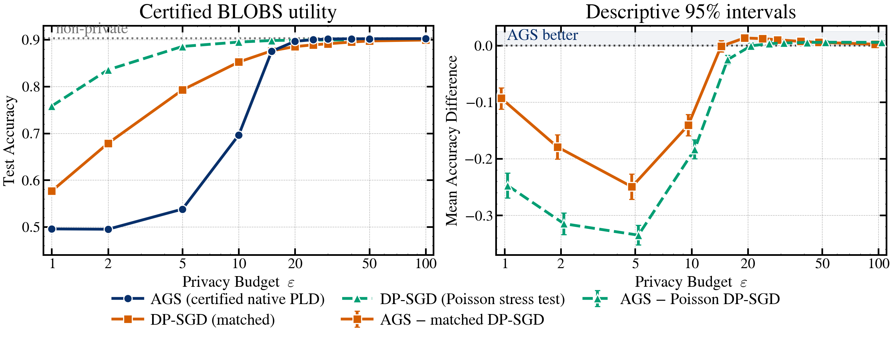
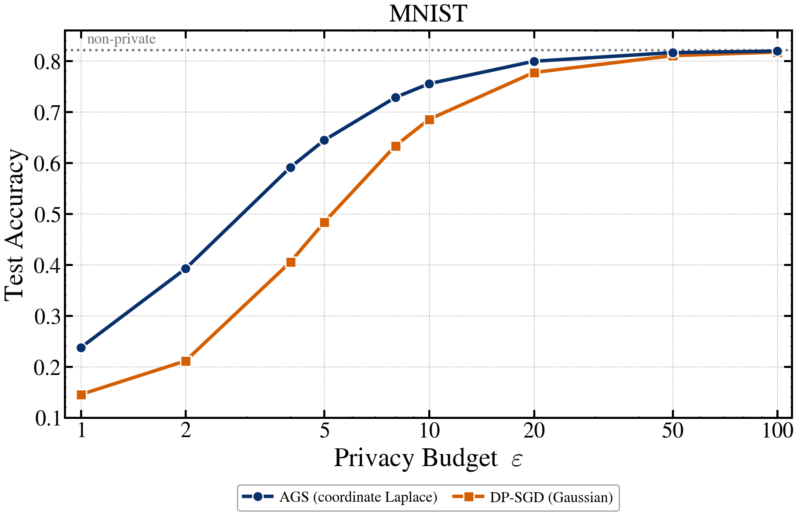

Interpretation: BLOBS is the fully certified headline result. Its intervals are descriptive because the fixed AGS cell was selected during exploratory development. The Poisson curve is an algorithmically unmatched stress test. PCA's long-trajectory sensitivity remains conditional; the one-step panel is exact and reverses the ordering.


Generated from the certified overnight JSON summaries by ags/accounting/plot_overnight_status.py.